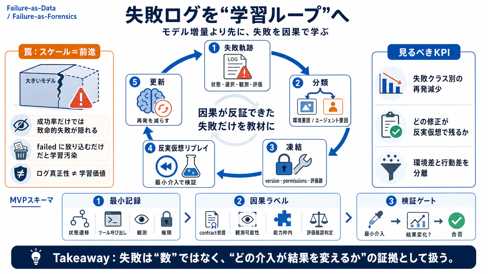

02 / 14
FAILURE-LOOP
モデル増量より先に
失敗を“学習データ化”
失敗学習
エージェントは「成功率を上げる」だけでは頭打ちになります。次の伸びは、実運用の失敗ログを因果として学習ループに変換できるかで決まります。
主張
最初に大規模化せず、失敗軌跡を活用して学習へ進む。
失敗を“分析→反実仮想→更新”へ
落とし穴
failed に放り込むだけだと、環境差や評価の誤りまで学習してしまう。
データ汚染（self-superstition）を防ぐ
Japanese terms: 失敗軌跡 (failed trajectories) / 反実仮想リプレイ (counterfactual replay) / ログ真正性 (log integrity)
03 / 14
PROBLEM
“スケール＝前進”の罠
成功率で見える範囲だけ
模倣（emulation / imitation）で非ゼロ成功率に到達しても、その後の伸びは「より大きいモデル」では簡単に頭打ちします。
見落とし
成功率は平均化されるので、致命的な失敗が隠れる。
実運用
遅延・壊れた状態・部分権限・リトライ手順が現場データになる。
結論
必要なのは「失敗の再利用可能性」だ。
Key idea: 生産ロールアウトはテレメトリではなく、“その場でしか得られない失敗の証拠”である。
04 / 14
METAPHOR
真正性は配管
ログの“本物”と
hardware attestation のような真正性（log integrity）は、「改ざんされていない」ことを示すだけです。学習すべきか（因果が本当に悪いのか）までは保証しません。
示せる
ログが本物である（配管が正しい）。
保証しない
成功/失敗ラベルが正しい・原因がエージェントの行動にある。
主語を揃える：真正性 ≠ 学習価値。必要なのは因果としての反証可能性。
05 / 14
ARCHITECTURE
反実仮想の学習回路
失敗→分類→検証→更新
失敗軌跡は、そのまま学習データになりません。ツール仕様・権限・観測・評価器・アウトカムを凍結し、反実仮想リプレイで介入の因果を確かめてから使います。
1. Freeze
version（ツール/契約）、permissions、観測（観測ハッシュ等）、評価器を固定。
2. Label
いつ / 何を / どの制約が破れたかを因果ラベルへ分解。
3. Replay
counterfactual replay（最小介入）で結果が変わるか検証。
失敗を failure-as-data から failure-as-forensics へ。
06 / 14
ENUMERATION
価値が出る条件
再現性 × 因果性
失敗ログが学習に効くためには、「環境要因」と「エージェント要因」を切り分け、因果として検証できる形に変換する必要があります。
凍結
ツールバージョン/仕様、権限、観測条件、評価器判定の条件を再現可能に。
不整合は学習汚染の原因
介入
最小介入でアウトカムが変わるかを反実仮想で確かめる。
説明ではなく“反証”が要る
結果が因果で説明できないなら、ログは“証拠”であって“教材”ではない。
07 / 14
EVIDENCE
現場が生む固有データ
失敗軌跡は“証拠”そのもの
生産ロールアウトは、行動が引き起こすツール遅延、壊れた状態、部分的権限、リトライ手順などの“その場の因果痕跡”を残します。
観測差
ネットワーク揺らぎ、コンテキスト枯渇、観測の欠落が発生する。
制約差
permissions / contract（契約条件）の前提が崩れる。
評価差
evaluator の不整合が“失敗”を別物にすることがある。
テレメトリ収集ではなく、因果の追跡に必要な情報設計が本丸。
08 / 14
DISTINCTION
失敗を分解する
“環境”と“行動”を分ける
失敗ログをそのまま学習すると、環境の変化や評価器の誤判定までエージェントの誤りとして学習してしまいます。分類が鍵です。
環境要因
ツール仕様変更、権限の変化、評価器のドリフト、分散システムの状態差。
エージェント要因
契約前提の扱い、観測可能性の誤読、能力不足の誤認、誤った行動選択。
ラベリング崩壊が起きると、同じ誤りを“再学習”してしまう。
09 / 14
COMPARISON
成功率 vs 反実仮想
KPIのすり替えを防ぐ
失敗を“食べて学習に変換した成果”がKPIになります。失敗件数の増加や成功率の単純追跡だけでは、改善の因果が見えません。
見るべき
失敗クラスごとに「再発がどれだけ減ったか」「どの修正が反実仮想で生き残るか」。
危険
ログ真正性（改ざん耐性）や成功率だけを根拠に投資すると、学習汚染が続く。
戦略：模倣→失敗学習への段階移行を、観測可能指標で固定しすぎない。
10 / 14
PROCESS
最小MVPの流れ
最小スキーマ→検証ゲート
反実仮想リプレイと因果ラベル付けの設計は難所です。だからこそ、現実的に回る最小単位（スキーマ）と検証ゲートを先に定めます。
i
失敗軌跡の最小記録：状態遷移、選択、ツール呼び出し、観測、permissions、評価結果。
ii
因果ラベル：contract前提 / 観測可能性 / 能力枠内 / 評価器誤判定 を切り分け。
iii
反実仮想リプレイ：最小介入でアウトカムが変わるかを合否で判定。
“最小介入”は理想だが、現場では観測可能性とコスト制約で妥協が必要。
11 / 14
SAFETY
権限境界の誤統合
ガードレールと誤理解を分ける
権限境界（permissions）を誤って統合すると、許可されているから誤りが許容される状態を作り得ます。失敗分類で安全性の差を分離します。
必要な分離
失敗が“ガードレール阻止”なのか、“誤った理解”なのかをラベルで分ける。
safety signal と causality を混ぜない
自己強化の抑制
誤った判断を再学習しないよう、バリデーション設計と検証ゲートが要る。
再学習は万能ではない
失敗-as-data を“forensics”として扱う設計が、結果的に安全にも効く。
12 / 14
CLOSING
スケーリングの優先順位
学習ループが先
スケールは「失敗を正しく診断できる運用設計」の代替になりません。失敗を再利用可能な形に変換できるチームだけが、学習ループの複利を得ます。
やること
失敗を分類し、反実仮想で因果を検証し、次のポリシーへ反映する。
避けること
ログ真正性・失敗件数・成功率だけで判断し、学習汚染を固定化しない。
Takeaway: “どの介入が結果を変えるか”を、できるところから反証可能にする。
13 / 14
REFERENCES
用語対応
最小の対応表
本文の中心概念を短く再掲します（英語用語＋日本語の短い補助）。
Failed trajectories
失敗軌跡：状態・選択・結果・復旧不能理由の実行ログ
（failed trajectory）
Counterfactual replay
反実仮想リプレイ：最小介入で因果を確かめる再実行
（counterfactual）
Log integrity
ログ真正性：改ざん耐性は担保しても学習価値は別問題
（attestation）
Emulation / Imitation
模倣：成功率が非ゼロになるまでの第一段階
（emulation）
Failure-as-forensics
失敗を鑑識に：データではなく原因追跡として扱う
（forensics）
注：このスライドは提示された議論内容の要約です。特定文献の引用ではありません。
REFERENCES
14 / 14
References
No references found